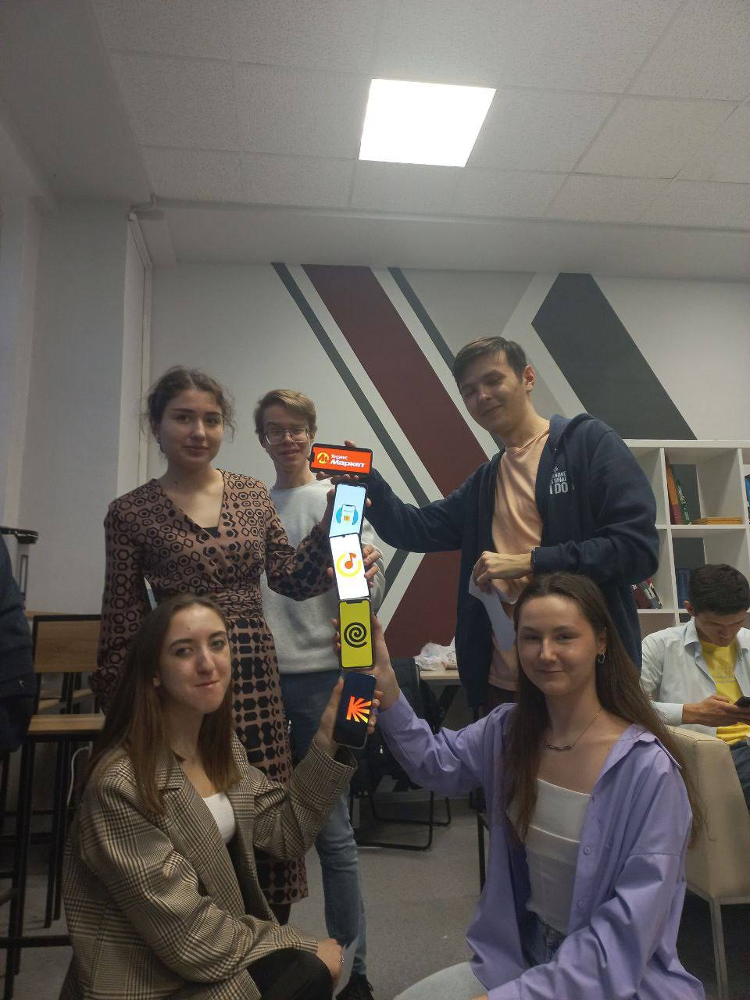

Журнал проекта
Следите за ходом разработки и ключевыми этапами нашего проекта.
На первоначальном этапе мы проанализировали потребности пользователей и создали тестовую версию Telegram-бота для работы с расписанием. Определили целевую аудиторию (студенты), основные функции (просмотр расписания, уведомления, напоминания) и набор команд. Бот уже умеет показывать расписание, поддерживает интерактивное взаимодействие и подключён к вузовским системам. Реализована автоматическая синхронизация данных и базовые возможности персонализации.
Мы значительно улучшили нашего Telegram-бота, добавив новые функции и повысив его безопасность.
Теперь с помощью команды /date можно быстро получить расписание на конкретный день,
а функция /add_holidays позволяет отмечать выходные, чтобы исключить лишние уведомления.
Также мы внедрили анти-спам систему для защиты от злоупотреблений и механизм проверки прав доступа,
чтобы управление ботом оставалось удобным и безопасным. Эти обновления делают работу с расписанием
ещё комфортнее!
Используя нашего бота, вы доверяете нам свои данные. Мы собираем только необходимую информацию: ваш статус (студент/преподаватель) и учебную группу — это нужно для корректного отображения расписания. Также мы храним ваш Telegram ID и настройки уведомлений для персонализации сервиса.
Мы продвигали бота через каналы, которыми студенты пользуются каждый день. Размещали рекламу в официальных вузовских чатах и учебных Telegram-группах, предварительно согласовав это с администраторами. Развешивали рекламу с qr-кодом на столбах. Каждый член нашей команды лично рассказал о боте десяткам студентам и попросил их поделиться ссылкой с друзьями. Такой подход позволил быстро создать лояльную аудиторию и увеличить количество пользователей.
Мы регулярно проводим опросы среди пользователей, чтобы улучшать бота. Участвовать могут все – и те, кто активно пользуется сервисом, и даже те, кто решил отключить бота (нам особенно важно понять причины этого). Ваши ответы помогают нам делать бота удобнее, добавлять нужные функции и исправлять недочеты. Каждый голос важен для развития проекта!
От моделирования карьеры до развития собственного проекта: студенты Политеха приняли участие в симуляции «Путь работника Яндекса» 7 марта 2025 года студенты группы 241-362 Московского Политеха — Панпушный Эдуард и Черникова Софья Михайловна — посетили обучающее мероприятие от партнёрской организации Young&&Yandex, которое прошло в Новой библиотеке (ул. Большая Семёновская, 38). В центре внимания оказалась интерактивная симуляция «Путь работника Яндекса», направленная на погружение в карьерную среду одной из крупнейших IT-компаний страны.
Погружение в карьерный путь: 6 ключевых этапов
- Презентация Яндекса
Участники познакомились с историей и направлениями работы компании, а также узнали о карьерных возможностях. Представители Яндекса ответили на интересующие вопросы, поделившись своим опытом. - Образовательный блок
Особое внимание было уделено теме непрерывного самообучения, а также значимости профильных курсов и технической подготовки. - Стажировка
На этом этапе моделировались условия командной работы: студенты решали практические кейсы, приближённые к реальным задачам, с которыми сталкиваются разработчики и аналитики. - Создание резюме
Участники составили собственные резюме в соответствии с корпоративными стандартами Яндекса и получили рекомендации по улучшению их структуры и подачи. - Собеседование
В формате мини-интервью студенты отработали навыки самопрезентации и ответов на типовые вопросы, которые задают рекрутеры при приёме на работу. - Работа
Завершающий этап позволил участникам почувствовать себя полноправными членами команды Яндекса, приняв участие в решении производственных задач.
Практическая польза для проекта «Цифровой помощник»
- Прямая ценность: проектное мышление
Задачи, решавшиеся в рамках симуляции, во многом пересекаются с текущими этапами проекта — от анализа требований до проектирования архитектуры решения. Это помогло взглянуть на организацию рабочего процесса с новой стороны. - UX-подходы
Обсуждение пользовательского опыта и интерфейсов дало полезные ориентиры для разработки интуитивно понятного и функционального дизайна цифрового помощника. - Дополнительные плюсы
Навыки, полученные при составлении резюме, пригодятся в будущем для привлечения внешних партнёров и инвесторов.
Установленные контакты с представителями Яндекса могут стать важным ресурсом для консультаций и экспертизы по технической части проекта.
«Этот ценный опыт позволил нам лучше понять карьерные перспективы в ведущих IT-компаниях и открыл новые горизонты для развития в рамках нашего проекта», — поделились участники.
Мы приняли участие в мастер-классе от ООО "Эдит Про", где на практике освоили процесс формирования требований к ПО, выступая в роли заказчика туристических услуг. В ходе деловой игры мы анализировали потребности клиентов, определяли приоритеты функционала и разрабатывали концепцию IT-решения для туроператора под руководством опытных экспертов. Этот практический опыт позволил нам глубже понять логику заказчиков и усовершенствовать подходы к разработке пользовательских интерфейсов в нашем основном проекте. Особенно ценным оказался непосредственный контакт с профессионалами отрасли, чьи советы мы теперь применяем при создании цифрового помощника для студентов.
Подробный отчет по созданию Telegram-бота на Node.js
В этом отчёте предоставлено пошаговое руководство по созданию Telegram-бота на Node.js с использованием JavaScript и библиотеки node-telegram-bot-api.
1. Исследование предметной области и постановка задач
Для начала нужно определить смысл и цель бота:
- Решите, зачем пользователи будут обращаться к вашему боту — получать уведомления, искать информацию или участвовать в опросах.
Далее составить список ключевых функций:
- Запишите, какие команды и ответы будут базовыми (например, /start ,/help, эхо, запрос погоды).
После ознакомиться с официальной документацией, чтобы понять доступные методы:
- Telegram Bot API: https://core.telegram.org/bots/api
- JavaScript (MDN): https://developer.mozilla.org/ru/docs/Web/JavaScript
- node-telegram-bot-api (GitHub): https://github.com/yagop/node-telegram-bot-api
Блок-схема работы бота выглядит следующим образом:
"получили сообщение → определили тип (команда/текст/API) → сформировали ответ → отправили ответ"
2. Подготовка окружения
Для работы потребуется Node.js (≥14) и npm.
2.1. Установка Node.js
Windows: скачайте Windows Installer (.msi) с nodejs.org и установите.
macOS: через Homebrew: brew install node или скачайте .pkg с сайта.
Ubuntu/Debian:
curl -fsSL https://deb.nodesource.com/setup_lts.x | sudo -E bash -
sudo apt-get install -y nodejsПроверьте версии в терминале:
node -v # должно быть v14 или выше
npm -v2.2. Создание проекта
mkdir src && cd src
npm init -y2.3. Установка зависимостей
npm install node-telegram-bot-api dotenv axios winston mongodb2.4. Конфигурация окружения
Создайте файл .env в корне проекта:
BOT_TOKEN=ВАШ_ТОКЕН_БОТА
WEATHER_KEY=ВАШ_API_КЛЮЧ_OPENWEATHER
MONGO_URL=Ваша_строка_подключения5. Реализация основных функций бота
5.1. Подключение зависимостей
require('dotenv').config();
const TelegramBot = require('node-telegram-bot-api');
const axios = require('axios');
const logger = require('./logger');
const { connect } = require('./db');
const token = process.env.BOT_TOKEN;
if (!token) { console.error('ERROR: BOT_TOKEN не задан'); process.exit(1); }
const bot = new TelegramBot(token, { polling: true });
console.log('Бот запущен...');
connect().then(() => console.log('MongoDB подключена'));9. Модификация Telegram-бота: Добавление функции напоминаний
Цель модификации
Добавить новую функцию — напоминания по таймеру, чтобы бот мог уведомлять пользователя через заданное количество минут.
9.1. Изменения в коде
bot.onText(/\/remind (\d+)\s+(.+)/, async (msg, match) => {
const minutes = parseInt(match[1]);
const text = match[2];
const chatId = msg.chat.id;
if (isNaN(minutes) || minutes <= 0) {
return bot.sendMessage(chatId, 'Пожалуйста, укажите количество минут больше нуля.');
}
const remindTime = new Date(Date.now() + minutes * 60 * 1000);
bot.sendMessage(chatId, `Напоминание установлено через ${minutes} минут.`);
setTimeout(() => {
bot.sendMessage(chatId, `Напоминание: ${text}`);
}, minutes * 60 * 1000);
const db = await connect();
await db.collection('reminders').insertOne({
chatId,
text,
remindAt: remindTime,
createdAt: new Date(),
user: msg.from.username || msg.from.id
});
});